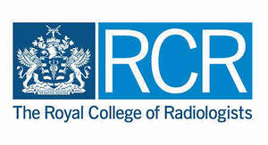

Trade Mark Journal No.2026/012 20 March 2026
UK00004332757 30 January 2026 (42)

The rights conferred by this registration are personal to The Royal College of Radiologists and may not be enforced or acquired by any licensee or assignee/transferee of the said Royal College of Radiologists. This limitation shall not restrict The Royal College of Radiologists from permitting third parties to use the mark under contract.
- Class 42
- Software as a Service [SaaS]; Platform as a Service [PaaS]; providing temporary use of non-downloadable computer software; providing temporary use of non-downloadable computer software for use as an application programming interface (API); Software as a Service [SaaS] and Platform as a Service [PaaS] in the field of healthcare, medicine, radiology, diagnostics, imaging, medical screening, medical scanning, medical treatment, medical testing and medical examination; computer programming services; design, development, maintenance, upgrading and repair of computer software and software applications; hosting a website featuring information in the field of healthcare, medicine, radiology, diagnostics, imaging, medical screening, medical scanning, medical treatment, medical testing and medical examination; design services; design of referral guidelines for medical, dental and healthcare professionals; application service provider (ASP); research services; scientific research; medical research; clinical research; research services in the field of healthcare, medicine, radiology, diagnostics, imaging, medical screening, medical scanning, medical treatment, medical testing and medical examination; testing, analysis and evaluation of the services of others for the purpose of certification; testing services for the certification of quality or standards; accreditation and certification services; certification [quality control]; certification of educational services; certification of medical services; certification of services in the field of healthcare, medicine, radiology, diagnostics, imaging, medical screening, medical scanning, medical treatment, medical testing and medical examination; information, advisory and consultancy services relating to all the aforesaid services.
Royal College of Radiologists
Representative: Kilburn & Strode LLP